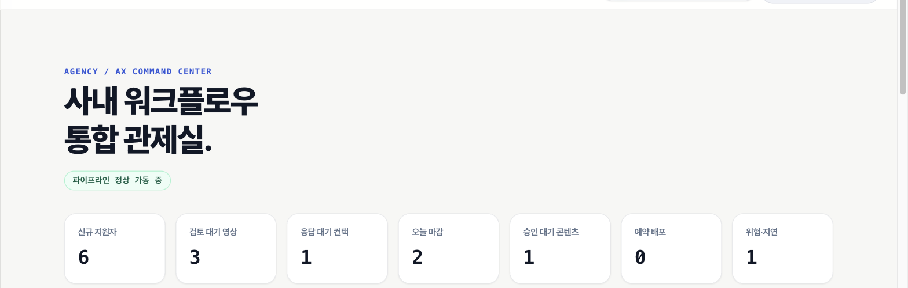

NOW · LIVE
프로필과 후보 파이프라인
포즈·피치·안무 비교
숏폼 렌더링과 전달
ENTER—AX / IR DECK 2026
중소·중견 엔터테인먼트사를 위한 Human-in-the-loop AX workflow
PROTOTYPE
지원자 접수 · 검토 보조 · 콘텐츠 실행을 하나의 운영 흐름으로.
Working prototype · Korea · September 2026
01 / PROBLEM
초기 문제 가설 · 고객 인터뷰에서 업무량과 처리시간을 검증할 항목
02 / WHY NOW
출처: KOCCA·공공데이터포털 등록기업 현황(2026.08.12), KOCCA 2025 콘텐츠산업 동향분석 및 대중음악산업계 간담회
03 / SOLUTION
PROTOTYPE 자동 합격·탈락 없음 · 최종 판단과 발송은 사람이 승인
04 / WORKING PRODUCT

2026.09.23 로컬 실행 확인 · 실행시간과 자기 비교값은 품질 벤치마크가 아닌 작동 증거
05 / PRODUCT BOUNDARY
프로필과 후보 파이프라인
포즈·피치·안무 비교
숏폼 렌더링과 전달
3–5개사 파일럿
권한·미디어 저장
작업 큐와 비용 계측
A&R 문서 흐름
메신저·일정 연동
회사별 AX 자동화
TESTED 자동 테스트 102개 통과 · PostgreSQL 연동 테스트 4개는 별도 환경 필요
06 / MARKET
ASSUMPTION 출처: 공공데이터포털 대중문화예술기획업 등록기업 현황(2026.08.12) · 가격과 적합 고객 수는 파일럿 검증 대상
07 / COMPETITIVE POSITION
| 대안 | 강점 | 남는 단절 |
|---|---|---|
| 폼·시트·메신저 | 익숙하고 저렴함 | 검토 맥락과 실행 기록 분산 |
| DISCO · Cyanite | 음악 카탈로그와 A&R 검색 | 한국형 지원자→콘텐츠 운영과 분리 |
| OpusClip | 완성도 높은 범용 영상 재가공 | 후보 검토·내부 승인과 분리 |
| Enter—AX | 지원자→후보→콘텐츠 연결 | 파일럿과 레퍼런스 확보 전 |
경쟁사 공개 제품 기준: DISCO A&R & Management, Cyanite, OpusClip · 2026.09 조사
08 / BUSINESS MODEL
도입 범위 합의
초기 세팅비
월 구독료
워크플로 구성
미디어 분석
운영·지원
Starter 50만/월
Growth 150만/월
Enterprise 400만+/월
ASSUMPTION 세팅비 100만 / 300만 / 1,000만 원+ · 고객 인터뷰와 파일럿에서 지불의사 검증
09 / VALIDATION & GTM
실제 미디어 분석과 렌더링 파이프라인의 로컬 실행을 확인했습니다.
처리시간, 승인율, 재사용률과 운영 장애를 회사별로 기록합니다.
유료 전환과 추천 가능한 도입 사례가 반복 가능한 GTM의 출발점입니다.
현재 고객 인터뷰·LOI·유료 계약은 제시하지 않음 · 확보 즉시 근거 수준을 갱신
10 / TEAM & EXECUTION
오디션 검토와 콘텐츠 실행을 하나의 운영 문제로 정의합니다.
웹 제품, 미디어 분석, 렌더링, 승인 흐름을 코드로 연결했습니다.
고객 현장과 반복 검증할 동료 및 산업 파트너를 우선 확보합니다.
대표 경력과 외부 협업 실적은 검증된 프로필 자료 수령 후 추가
11 / CLOSING ASK
투자금보다 먼저, 반복 가능한 고객 문제와 도입 근거를 증명하겠습니다.
ENTER—AX · Working prototype · 2026